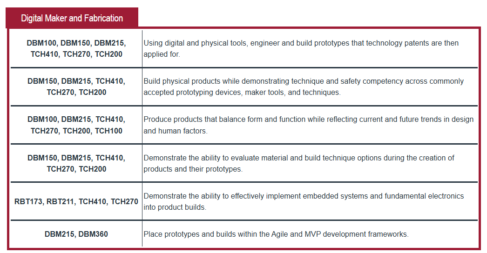

Digital Maker and Fabrication Boards
Objectives supported by selected projects completed throughout my time at UAT.
Boards Evaluation Process
The purpose of the Boards evaluation is to demonstrate to Subject Matter Experts in the Digital Maker and Fabrication program that I have developed the knowledge, technical ability, and professional competency required to graduate from UAT.
The Digital Maker and Fabrication degree contains six program objectives. Each objective represents a major area of competency developed through specific courses in the program. The course and objective chart below shows where these skills are introduced, practiced, and applied throughout the degree.

Digital Maker and Fabrication program objectives and the courses associated with each objective.
Each objective on this page is supported by at least two projects selected from my UAT coursework, Student Innovation Project, and independent design work. A project may support up to two objectives when different parts of its development provide clear evidence for each requirement.
The explanations on this page focus on how each project demonstrates the objective rather than simply describing what the project is. The supporting photographs, CAD models, technical drawings, simulations, presentations, testing records, and videos are located on the Projects and SIP pages.
During the evaluation, each objective is reviewed separately. All six objectives must receive a satisfactory score of three out of five or higher. Any objective receiving a score of two or below must be revised and presented again during the second evaluation round.
Objective 1
Using digital and physical tools, engineer and build prototypes that technology patents are then applied for.
Related courses: DBM100, DBM150, DBM215, TCH410, TCH270, TCH200
Perpetual Planter
The Perpetual Planter meets this objective through the engineering of a reusable insert that converts a standard planter into a passive water reservoir. Fusion 360 was used to create the design, refine the internal mesh geometry, define the dimensions, and simulate the strength of the part before manufacturing.
The project was developed around a specific problem: reducing accidental overwatering, underwatering, and root rot without requiring the user to replace an existing planter. The resulting prototype has a defined function, documented construction, multiple design versions, technical dimensions, and potential alternative configurations. This provides the information needed to prepare the product for the patent-application process.
- Created as an original functional product concept
- Designed and revised using Fusion 360
- Evaluated through structural simulation
- Documented with dimensions and product applications
- Prepared for further patent-development documentation
Project C2: Capillary Canopy
Project C2 meets this objective through the engineering and physical production of a modular terrarium lid designed to manage moisture and enclosure conditions through passive geometry. The system combines condensation routing, vent control, sealed fitment, and optional water-transfer features within a set of 3D-printed components.
The project progressed from an innovation claim into multiple CAD revisions, manufactured prototypes, environmental testing, technical drawings, and a final SIP brief. The design process produced enough evidence to explain the problem, construction, operation, variations, and intended function of the invention, preparing the concept for possible patent development.
- Developed from an original innovation claim
- Created through CAD and additive manufacturing
- Tested across multiple physical revisions
- Documented with technical drawings and SIP materials
- Prepared as a patent-ready prototype concept
Objective 2
Build physical products while demonstrating technique and safety competency across commonly accepted prototyping devices, maker tools, and techniques.
Related courses: DBM150, DBM215, TCH410, TCH270, TCH200
Screw School / Screw Stack
Screw Stack meets this objective by demonstrating the complete transition from a digital model to a manufactured physical storage product. Fusion 360 was used to create the tray geometry, screw openings, stacking pegs, labels, and connection features. The parts were then sliced, printed on a Bambu P1P, assembled, and tested with actual screws.
Several manufacturing issues were identified during the process, including disconnected pegs, small text disappearing after slicing, and slot geometry that did not guide screws properly. Correcting these problems required competent use of CAD, slicing software, additive-manufacturing settings, material handling, printer operation, and physical assembly techniques.
- Designed parts in Fusion 360
- Prepared prints in Bambu Studio
- Manufactured multiple physical revisions
- Tested assembly, stacking, labeling, and screw fit
- Applied safe 3D-printer and prototyping practices
Four-Gear Mechanism
The Four-Gear Mechanism meets this objective through the construction and testing of a working mechanical assembly. Four gears containing 12, 24, 36, and 48 teeth were created as separate components and installed on a custom mounting plate.
The center distances were calculated from the gear radii so that the teeth would engage correctly. The final assembly was tested as a connected mechanism with an overall 1:4 gear ratio. This required accurate CAD construction, component organization, joint setup, mechanical spacing, and motion testing.
- Created four functional gear components
- Calculated mounting distances
- Designed a supporting base plate
- Assembled and tested the complete mechanism
- Verified the intended 1:4 gear relationship
Objective 3
Produce products that balance form and function while reflecting current and future trends in design and human factors.
Related courses: DBM100, DBM215, TCH410, TCH270, TCH200, TCH100
DBM 100 Plane
The DBM 100 Plane meets this objective by balancing aerodynamic form with the manufacturing and assembly requirements of a 3D-printed glider. The design incorporated wing shape, stabilizers, a tail, a central connector, and a launcher interface while remaining divided into parts that could be manufactured and assembled.
The approximately 19-inch wingspan, modular construction, alignment features, and launcher body were developed around physical performance rather than appearance alone. The project also considered handling, assembly, transport, repair, and user interaction with the launching system.
- Balanced aerodynamic shape with printable construction
- Created modular left wing, right wing, tail, and connector parts
- Integrated alignment and launcher features
- Considered assembly and physical handling
- Used form to support flight and structural function
Dozer Mouse
The Dozer Mouse meets this objective through the design of a functional computer mouse that deliberately moves away from the common smooth and minimal appearance of consumer computer hardware. The product uses construction-equipment styling, exposed mechanical forms, track-inspired textures, contrasting colors, and a movable wrist-support concept.
The exterior still had to fit the required electronic components and allow the user to reach the buttons, scroll wheel, sensor, and grip surfaces. Multiple sketches and CAD revisions were used to examine comfort, hand position, button access, structural support, appearance, and usability.
- Designed around required mouse components
- Considered grip, hand position, and wrist support
- Developed a distinctive construction-equipment theme
- Balanced visual identity with hardware function
- Identified future ergonomic and usability improvements
Objective 4
Demonstrate the ability to evaluate material and build technique options during the creation of products and their prototypes.
Related courses: DBM150, DBM215, TCH410, TCH270, TCH200
DBM 100 Plane
The DBM 100 Plane meets this objective through the evaluation of how a glider could be divided, printed, assembled, and reinforced while remaining light enough to function. The design required decisions about component orientation, joining methods, wall thickness, launcher contact, impact areas, and the relationship between structural strength and total weight.
Digital simulation and prototype revisions helped identify areas of concentrated stress and possible failure. The launcher body was also developed to align the glider, sit against the nose, and absorb force during launch. These decisions show that the construction method and geometry were evaluated throughout development.
- Compared modular and assembled construction approaches
- Evaluated stress and likely failure areas
- Designed parts around additive-manufacturing limits
- Balanced strength, weight, and printability
- Revised the design using simulation and physical requirements
Screw School / Screw Stack
Screw Stack meets this objective through the comparison of PLA and PETG, the evaluation of 3D printing and CNC production, and repeated changes to the component geometry. The material needed enough flexibility to accept screws without cracking while remaining durable enough to support repeated use.
Manufacturing tests revealed that font size, nozzle capability, peg attachment, fillet depth, slot dimensions, and screw spacing directly affected the finished product. The design was revised after these problems were observed, showing that material and production decisions were based on real manufacturing results.
- Compared PLA and PETG properties
- Evaluated 3D printing against CNC production
- Modified slots and fillets after testing
- Corrected disconnected pegs and failed labels
- Used prototype failures to guide manufacturing changes
Objective 5
Demonstrate the ability to effectively implement embedded systems and fundamental electronics into product builds.
Related courses: RBT173, RBT211, TCH410, TCH270
Dozer Mouse
The Dozer Mouse meets this objective by integrating a wireless mouse electronics kit into a custom-designed and 3D-printed enclosure. The product was built around the physical requirements of the circuit board, optical sensor, scroll wheel, switches, battery connection, and wireless receiver.
The enclosure could not be designed as an independent decorative shell. Internal clearances, mounting locations, sensor openings, button movement, and component access had to align with the electronic system for the mouse to function. The final evidence will include assembly and functional testing of cursor movement, clicking, and scrolling.
- Designed around an electronic mouse kit
- Provided internal component clearance and support
- Integrated sensor, switches, wheel, power, and circuit board
- Manufactured a custom enclosure for the electronics
- Functional demonstration pending final assembly
Gaia ESP32 Enclosure Monitor
The Gaia ESP32 Enclosure Monitor is being developed as a compact environmental monitoring node for a terrarium. The MVP combines an ESP32-WROOM-32, a DS18B20 digital temperature sensor, and a 0.96-inch SSD1306 OLED display.
The ESP32 receives temperature data from the sensor, processes the reading through embedded code, and displays the result on the OLED. The completed build will place the electronics into a custom Fusion 360 enclosure and will demonstrate sensor input, microcontroller processing, display output, power distribution, wiring, and physical product integration.
- ESP32-WROOM-32 microcontroller
- DS18B20 digital temperature sensor
- SSD1306 I2C OLED display
- USB-powered embedded system
- Custom Fusion 360 housing pending
Status: Build and documentation in progress.
Objective 6
Place prototypes and builds within the Agile and MVP development frameworks.
Related courses: DBM215, DBM360
Perpetual Planter
The Perpetual Planter meets this objective by beginning with a simple passive MVP before expanding into more advanced product concepts. The first usable version focused on the essential function: converting a standard planter into a reservoir that helps stabilize moisture and reduce watering mistakes.
Multiple mesh-disc versions, dimensional revisions, and structural simulations were used to improve the product. Features such as water-level sensing, soil moisture monitoring, temperature monitoring, LEDs, and multi-pot communication were intentionally identified as future development rather than being required for the first functional prototype.
- Started with a focused passive MVP
- Created and compared multiple design iterations
- Used simulation to identify overengineering
- Separated essential functions from future features
- Established a clear path for continued development
Project C2: Capillary Canopy
Project C2 meets this objective through a documented design-build-test-revise process that progressed through four major prototype versions. Each revision responded to evidence gathered from fitment, condensation, evaporation, ventilation, humidity, and water-transfer testing.
The MVP focused on proving that a fitted 3D-printed lid could influence the terrarium environment through passive geometry. More complex ideas were revised, simplified, or removed when testing showed they did not perform as expected. The final prototype established a working product direction while clearly documenting limitations and future improvements.
- Developed through repeated prototype revisions
- Used testing results to prioritize changes
- Removed or revised features that failed
- Documented milestones, results, and next steps
- Completed and passed as the final SIP project
Supporting Project Evidence
Additional photographs, CAD images, technical drawings, presentations, videos, manufacturing documentation, and testing results are available on the Projects and SIP pages.